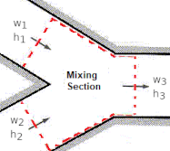

Adiabatic Mixing of Air Streams

Humid air leaving an air conditioning system at T1°C, RH1% at a rate of V1 (m3/time) is mixed adiabatically with outside air at T2°C, RH2% at a rate of V2 (m3/time).
Assuming the whole process takes place at 101(kPa), determine
- Specific and relative humidities,
- Dry-bulb temperature,
- Flow rate (m3/time).
Reference: Cengel YA, Boles MA, Kanaoglu M (2019). Thermodynamics: an engineering approach, 9th edition, McGraw-Hill Education.
| P: | |
| T1: | |
| RH1: | |
| V1: | |
| T2: | |
| RH2: | |
| V2: | |